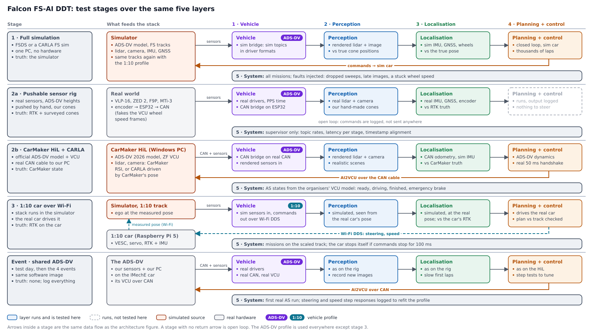
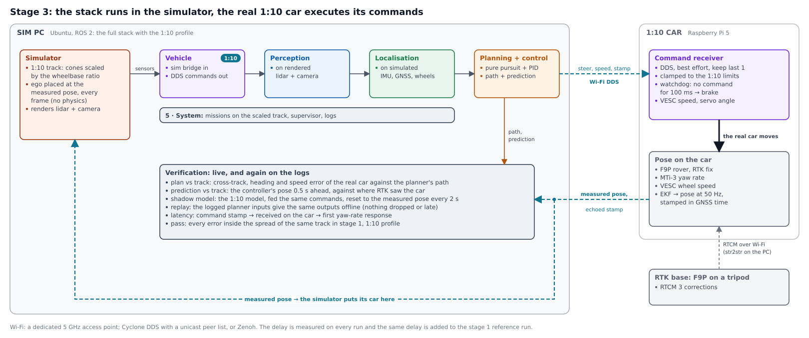

Falcon DDT: system architecture and test plan
2 November 2026 · Falcon FS-AI DDT entry on the IMechE ADS-DV · companion files in the team repository: the compute options, lidar coverage and sensors pages, and the cost workbook ddt_essential_costs.xlsx
In one screen
Context: FS-AI results and teams without a car
FS-AI dynamic results, 2022–2026 (checked against the official files)
Counts are teams that finished at least one run in each event. Finishing slower than the time limit still earns 25 points, and trackdrive pays 10 points per completed lap, so any score above zero means the car got round. “10 laps” means at least 100 trackdrive points. Sources: official IMechE results for 2022, 2023, 2024, 2025, 2026.
| Year | Entries | Scored any dynamic | Accel | Skidpad | Sprint | Trackdrive, any lap | Trackdrive, 10 laps | Teams that finished all 10 laps |
|---|---|---|---|---|---|---|---|---|
| 2022 | 7 | 4 | 4 | 2 | 2 | 2 | 2 | University of Edinburgh, Coventry University |
| 2023 | 19 | 5 | 2 | 1 | 2 | 5 | 3 | The University of Edinburgh, Oxford Brookes University, Edinburgh Napier University |
| 2024 | 20 | 7 | 3 | 1 | 2 | 6 | 6 | Edinburgh University Formula Student Driverless, Oxford Brookes Racing Autonomous, UGRacing, UPMRACING, Formula Student Team Napier, UVigo Motorsport (ADS) |
| 2025 | 25 | 8 | 1 | 2 | 3 | 8 | 6 | The University of Edinburgh, Oxford Brookes University, University of Glasgow, Indian Institute of Technology Bombay, University of Bath, UPM Technical University of Madrid |
| 2026 | 27 | 14 | 5 | 2 | 8 | 13 | 6 | Oxford Brookes University (+APC), University of Glasgow, University of the Basque Country (UPV/EHU) (+APC), Ain Shams University, Trinity College Dublin, University of Strathclyde |
2021 had no dynamic events (all DDT teams scored zero there). 2022 lists the DDT class only; two separate ADS entries scored no dynamic points. From 2024 the table includes ADS entries; UVigo’s 2024 trackdrive was with its own ADS car.
- Sheet3, 2022: the official file lists 7 DDT teams (place 4 is missing), not 8. Two teams finished acceleration and nothing else (Oxford Brookes, Glasgow), not one.
- Sheet3, 2025: “only two events” is 1 (Edinburgh: skidpad and trackdrive) and “only one event” is 6, not 2 and 5.
- Sheet3, 2026: “only one event” is 10, not 9. ECE Paris finished acceleration only.
- Sheet3, every year: the “Track Drive” column counts any trackdrive lap. Teams that finished all 10 laps: 2, 3, 6, 6 and 6.
- Sheet2: the places for IIT Bombay, UWE-AI and Trinity are correct. Trinity’s scaled vehicle (“Rigby”) exists, but its own documentation says no physical motion has been validated since its last audit. The Formula Bharat result for IIT Bombay was not checked.
- Sheet1: the ZED2 sees 110° horizontally (120° is the diagonal figure). The VLP-16’s 100 m range figure is right.
How teams without a car got there
| Team | Result | How they tested without a car | Stack | Source |
|---|---|---|---|---|
| IIT Bombay | 2025: 4th of 25, full trackdrive | EUFS sim and FSDS for every subsystem. Three versions of a home-built scaled robot with real sensors, driven in poor visibility and with water sprayed on the track. Images of about 3,500 cones taken during test runs on the ADS-DV, used for training. | VLP-16, two ZED2i, SBG Ellipse-N. YOLOv5 with lidar, stereo and mono pipelines in parallel. EKF-SLAM with JCBB association, plus MRPT. Delaunay mid-line. Stanley and pure pursuit. AGX Orin. | Rampuria 2024 |
| Trinity College Dublin | 2026: 5th of 27, full trackdrive, sprint finished | “Rigby”, a small test vehicle that imitates the car side of the CAN protocol (still being debugged). EUFS sim and IPG CarMaker in its guides. EUFS ros_can to talk to the car. | VLP-16 and ZED2, YOLOv5 boxes fused with lidar. GraphSLAM from 2025/26, FastSLAM before that. A GPS with its own EKF. Pure pursuit and a PID speed loop. Jetson AGX Orin. | Rigby, state estimation, perception, Brainy |
| Ain Shams (Egypt) | 2026: 4th of 27, full trackdrive. Best simulation score in 2025 and second best in 2026. | Its 2024 paper says the ADS-DV is “unavailable in our home country”, so it trained on a self-built simulator and had little time on the real car at the event. | Not published in detail. | ASU Racing 2024 (abstract only; the full text is not accessible) |
| Bath (TBRe AI) | 2025: 5th, full trackdrive. 2026: won Acceleration and finished all four events. | Ran “the organisers’ ADS-DV”. Wrote its path planning from scratch, plus a simulator to test it away from the track. | Not published. | Relec 2026 |
| Teams that relied on simulation, for contrast | ||||
| UWE-AI | 2024: 15th; 2025: 14th; no dynamic points | Felt ready in simulation but it “did not carry over”. Blames missing feedback control and perception failures on the supplied hardware. Then built a Raspberry Pi box that emulates the ADS-DV over CAN (lent to Bristol) and a small Ackermann testbed. | — | DesignSpark 2025 |
| HWU Dubai | 2025: 7th; no dynamic points (the 2026 entry “Heriot-Watt University” was 14th, also with none) | CARLA, with a stock CARLA car rather than an ADS-DV model. | RoboSense Helios 16P, ZED2i, CHCNAV INS. YOLOv8 and DBSCAN fusion, Cartographer, pure pursuit and PID. AGX Orin 64 GB. | Abdo 2025 |
| OzU Racing | 2025: 25th; 2026: 17th; no dynamic points | IPG CarMaker with the ADS-DV model. Its slides say real ADS-DV testing costs track rental and logistics, while simulation is free. | YOLO12 with depth lookup. EKF-SLAM with Hungarian association. ft-fsd-path-planning. Adaptive pure pursuit. | OzU CarMaker deck |
| Bristol | 2026: 18th; 3 trackdrive laps; also brought an APC car | EUFS sim2 in Docker. | Stereo camera only, no lidar. | GitHub (its sim2 Docker repository is no longer public) |
The pattern matches the advice of the EUFS software lead from 2021–23: build acceleration first, keep the stack small, use eufs_sim, and spend your limited ADS-DV time testing software and recording data, not writing interface code (How to FS-AI). Trackdrive is “autocross repeated 10 times”, so it rewards reliability.
System architecture
![Five layer panels. Vehicle: one or two lidars (a main lidar to buy, the VLP-16 optional), ZED 2, ZED-F9P, MTi-3 and the ADS-DV VCU, each feeding its driver; time and frames; CAN bridge. Perception: one lidar cone detector per lidar and the camera cone detector (OpenVINO, or TensorRT with the GPU) feed lidar-camera fusion. Localisation: odometry EKF from GNSS, IMU and CAN wheel speeds; cone SLAM from coloured cones. Planning and control: path planner, speed profile, controller. Commands return along the bottom to the CAN bridge. System: AS state manager linked to the CAN bridge, supervisor, mission behaviour tree that sets the planner's mode and receives start and finish line crossings from it.](figures/ddt_architecture.svg)
The five layers
| Layer | Blocks | In → out | Why it is its own layer |
|---|---|---|---|
| 1 · Vehicle | a driver for each lidar, the camera driver (the ZED wrapper with the GPU, zed-open-capture without it), GNSS and IMU drivers; time and frames (chrony on the F9P's PPS, sensor positions from the CAD); CAN bridge (FS-AI API on the CANable, answers the 50 ms handshake) | raw packets, CAN frames → time-stamped ROS 2 messages; commands → AI2VCU | The only layer that touches hardware. Swapping it is how one stack runs in simulation, on the rig, on the HiL, on the 1:10 car and on the ADS-DV. |
| 2 · Perception | lidar cones, one detector per lidar (crop, de-skew, ground removal, clustering, size check; a 505 mm cone is a big orange); camera cones (YOLO on OpenVINO, or TensorRT when the GPU is fitted); lidar–camera fusion, once per lidar scan | point clouds, image → cones with position, colour (blue, yellow, orange, big orange) and covariance, 10 Hz | It needs real sensors and real cones to test, so it is tested on the rig. |
| 3 · Localisation | odometry EKF (100 Hz); cone SLAM and mapping (EKF-SLAM first, GraphSLAM later) | IMU, GNSS, wheel speeds, steering angle, coloured cones → pose in the map at 100 Hz, cone map | Its metrics need a ground truth: RTK on the rig, the simulator's state in 1 and 2b. |
| 4 · Planning + control | path planner (one mode per mission; plans on map cones, and flags each crossing of the big-orange start and finish lines); speed profile; controller (pure pursuit + PID, MPC later) | cone map, pose → steering, torque, brake; line crossings to the behaviour tree | It needs a vehicle to close the loop: the simulator, the CarMaker model, or the 1:10 car. |
| 5 · System | AS state manager; supervisor; mission behaviour tree | AS state, mission, go, health, line crossings → mission status, emergency-stop request, planner mode | Safety and mission logic stay out of the driving code, so they can be tested with faults on purpose. |
How the system layer splits the work.
- The VCU owns the AS state machine. Ours only follows it. The CAN database's states are
AS_OFF,AS_READY,AS_DRIVING,EMERGENCY_BRAKEandAS_FINISHED. We reportMISSION_STATUS(not selected, selected, running, finished) and can setESTOP_REQUEST. - The behaviour tree runs only in
AS_DRIVING, with one tree per mission. It counts the line crossings the planner reports and, after the last one, sets the planner to stop inside the zone after the line (Colour). - The supervisor can stop the car, through the AS state manager, but it never steers.
How our stack compares with other teams
Almost every team writes its own implementation of a few standard algorithms. The libraries that recur are GTSAM, MRPT, Cartographer and robot_localization. The FSG column is from the self-reported “Driverless System” field on the team pages of the FSG Driverless Cup: the latest 2024–26 entry for 56 teams. Counts are mentions, so they are lower bounds.
| Layer | FS-AI DDT teams (ADS-DV) | FSG Driverless Cup, 56 teams | Falcon |
|---|---|---|---|
| Cone sensor | VLP-16 or another 16-ring lidar, plus a ZED camera | Ouster 17, Hesai 8, RoboSense 6, Livox 2, Velodyne 1. 20 teams list no camera. | A main lidar to buy (120° solid-state or 360° 32-channel), the owned VLP-16 as an optional second; the owned ZED2 |
| Motion | SBG or CHCNAV INS; wheel speeds from the car’s CAN | Optical ground-speed sensor 15, Xsens 8, VectorNav 4, SBG 4 | Xsens IMU, CAN wheel speeds, F9P velocity (RTK when available) |
| SLAM | EKF-SLAM (IIT Bombay, OzU). FastSLAM 2.0 moving to GraphSLAM (EUFS’s own comparison found GraphSLAM better; Trinity switched). Cartographer (HWU Dubai). | GraphSLAM or factor graph 13, EKF 10, FastSLAM 3 | EKF-SLAM first, GraphSLAM (GTSAM iSAM2) second |
| Planning | Delaunay mid-line, cone midpoints, ft-fsd-path-planning | Delaunay 4, race-line optimisation 4 | Delaunay mid-line plus a speed profile |
| Control | Pure pursuit or Stanley, plus PID, everywhere | MPC 18 | Pure pursuit and PID; MPC later |
| Compute | Jetson AGX Orin, or the IMechE InCarPC (i7-8700T, GTX 1060) | Intel industrial PC 18, Jetson Orin 15, AMD 7; several i7/i9 + RTX 4060-class desktops | x86 PC with an Intel H-series laptop CPU, plus an NVIDIA GPU that can be removed (Computer) |
The 2026 Driverless Cup podium shows where the top teams are heading. TU Hamburg won with a MEMS lidar, three radars, no camera, and MPC. NTNU was second, with a 192-channel RoboSense lidar, two ZED X One cameras, graph SLAM with an EKF, and MPC. ETH was third; its 2025 entry lists a Hesai OT128, a Basler camera, GraphSLAM with iSAM2 and MPC. All of these are 60+ km/h cars. The ADS-DV has 5 kW, so the simple stack above loses little at its speeds.
The car computer: x86, and the GPU is optional
The car computer is an x86 PC with an Intel H-series laptop CPU and an NVIDIA GPU. The Jetson AGX Orin is no longer part of the plan. One rule shapes the software: every block must run on the CPU and the chip’s built-in graphics alone. The GPU only makes some blocks faster. If the stack holds its rates without it, the GPU comes out and its power is saved, with no change to the code. Which inference back end runs is a launch parameter, set the same way as the vehicle profile.
| Block | Without the GPU | With the GPU |
|---|---|---|
| Lidar cones, odometry EKF, cone SLAM, planner, controller, system | CPU. Geometry and small filters, a few milliseconds each. | unchanged |
| Camera cones | YOLO, exported once to ONNX and run by OpenVINO on the built-in Arc graphics, the NPU or the CPU. On a Core Ultra 7 155H, YOLO26n takes 5.8 ms (INT8) to 9.1 ms (FP16) per image and YOLO26s 9.3 to 16.7 ms (Ultralytics OpenVINO benchmarks), inside the 25 ms budget. | the same ONNX model on TensorRT |
| ZED2 driver | Stereolabs’ zed-open-capture: images, the camera’s IMU and stereo rectification without CUDA, wrapped in a small ROS 2 node of our own. There is no ZED SDK depth; cone range comes from the lidar. | the ZED SDK and its ROS 2 wrapper, which need CUDA |
| Training YOLO | on the team’s RTX laptop | same |
- Why an H-series chip and not a desktop F chip. Intel defines the F suffix as “requires discrete graphics” (Intel processor numbers). An F chip such as the i7-14700F has no built-in graphics, so it cannot drop its GPU: with the card out there is no display, and OpenVINO has only the CPU cores. Core Ultra H chips carry Arc graphics and an NPU.
- Top teams run without a GPU. TU Hamburg won the 2026 FSG Driverless Cup with a COM Express module carrying an i7-13800HRE, stated at 50 W (FSG page, DC26 results). KIT came 6th with a Core Ultra 7 255H at 60 W (FSG page). Neither lists a camera or a GPU.
- The shared car’s InCarPC stays a fallback. An OpenVINO model also runs on its i7-8700T, while TensorRT 10 no longer supports its GTX 1060.
Power
| Build | Computer at the plug | With today’s sensors |
|---|---|---|
| H-series PC, CPU capped at 45 W, no GPU | 61 W | 77 W, 5.6 A |
| The same PC plus an RTX 5050 (130 W) | 206 W | 221 W, 16.1 A |
| Stated by other teams, processing units only | ||
| TU Hamburg (1st, 2026) · KIT (6th, 2026) | 50 W · 60 W | |
| Median of the ten FSG teams that pair an Intel CPU with an NVIDIA GPU | 220 W | |
Our estimate, using the power budget’s method in the cost workbook: a 13.7 V supply and its 30 A fuse; the CPU and the board, RAM and SSD (10 W) through a 12 → 19/20 V converter at 90%; the GPU through a 90% regulator; today’s sensors are the VLP-16 (8 W, direct), the ZED2 and USB devices (3.9 W) and the modem (3 W). The 10 W and the 90% converter are assumptions. The team figures are from their FSG pages, collected in the workbook’s FSG x86 teams tab.
Not fixed yet: the CPU model, the box, and how the GPU attaches (a PCIe slot, OCuLink or Thunderbolt). The reference chip is the Core Ultra 7 255H, KIT’s chip: 28 W base power and 115 W maximum turbo (Intel). The box must fit about 280 × 200 × 200 mm at the rear and run from the car’s 13.7 V through a converter, since laptop-chip mini PCs take a fixed 19 or 20 V. It also needs IMechE approval in the ASF (T1.1.6).
Two vehicle profiles
A profile is one parameter file plus one launch argument. Code never branches on the vehicle name. It reads numbers from the profile, and the profile chooses which drivers the vehicle layer starts.
| ADS-DV | 1:10 | |
|---|---|---|
| Used in | stage 1, 2a, 2b and the event | stage 3, and its reference runs in stage 1 |
| Commands go out through | CAN bridge → AI2VCU frames | DDS over Wi-Fi → Raspberry Pi 5 → VESC and steering servo |
| Wheel speeds and steering angle | VCU2AI frames. On the rig, an ESP32 sends them from an encoder. In simulation, the sim bridge computes them from the vehicle state. | VESC motor speed; the servo command |
| Geometry | wheelbase 1.530 m, track 1.200 m (specification) | measured on the chosen chassis |
| Limits | steering about ±28° in the CarMaker model (measure it); 55.7 Nm motor through 3.5:1 | servo travel and VESC current, measured |
| Sensor frames | from the official CAD (sensor plate) | F9P rover and MTi-3 positions on the RC car |
| Track | full size | cones scaled by the wheelbase ratio, so corners are as tight relative to the car |
| Controller gains | tuned on CarMaker, refitted from test-day step responses | tuned in stage 1 on the 1:10 model |
Test stages

| Stage | What is real | What it proves | Metrics |
|---|---|---|---|
| 1 · Full simulation FSDS or a CARLA-based FS simulator | nothing; one PC | The whole stack, end to end, on every mission, with faults injected on purpose. | Cones hit, missions not finished, lap time, cross-track error; perception recall by range; pose error against the simulator's truth. |
| 2a · Pushable rig | sensors, drivers, time sync, cones | Perception and localisation on our real sensors, at the ADS-DV's mounting heights. | Detection recall and false cones by range; colour accuracy; cone position error against surveyed positions; pose error against RTK; latency of each block. |
| 2b · CarMaker HiL + CARLA | the CAN cable, our CAN bridge, the organisers' VCU model | CAN handshake and AS states; localisation against exact truth in realistic scenes; control on the official vehicle model. | Handshake reply time; AS state transitions; trajectory error (ATE/RPE) against CarMaker's state; map error against the true cones; lap time. |
| 3 · 1:10 car over Wi-Fi | the actuators, tyres and lag of a real car, plus a Wi-Fi link | The planner's and controller's outputs hold up on a real plant, not just the model. | Plan vs track error, prediction error, shadow-model gap, latency. Details. |
| Event shared ADS-DV | everything | The first real AS run. | Steering and speed step responses to refit the ADS-DV profile; images of the real cones recorded for training. |
Stage 1: FSDS or a CARLA-based simulator
- FSDS:
- The v2.2.0 documentation lists lidar, camera, IMU, GPS and a ground-speed sensor.
- The repository has a ROS 2 bridge (
fsds_ros2_bridge) and was last pushed in September 2025. - There is no wheel-speed sensor, so the vehicle layer's sim bridge computes the four wheel speeds and the steering angle from the vehicle state, in VCU2AI units. Localisation then sees the same messages as on the car.
- FSDS also ships an ADS-DV vehicle (contributed by Imperial). Its commands are normalised throttle, steering and brake, so the sim bridge converts our torque and brake requests.
- CARLA: HWU Dubai's 2025 stack was built in CARLA, but with a stock CARLA car, and it scored no dynamic points. If we use CARLA, give its car the ADS-DV numbers from the vehicle model table and match CarMaker's step responses.
- Run every track twice: once with the ADS-DV profile, and once with the 1:10 profile. The 1:10 runs are the reference that stage 3 is checked against.
- Inject faults: dropped lidar sweeps, late images, a stuck wheel speed. These are the reliability failures that end a trackdrive.
Stage 2a: pushable rig
- Mounting: the real sensors sit at the ADS-DV's mounting heights, taken from the CAD.
- Fake wheel speeds: an encoder on a wheel drives an ESP32 that sends VCU2AI wheel-speed frames on CAN. The CAN bridge and the odometry EKF run unchanged.
- Ground truth: the RTK base sits on a tripod and the rover rides on the rig. Survey every cone with the rover before the run.
- Open loop: the planner runs but nothing moves. Check its path against the surveyed track.
- Lidar test: the VLP-16 runs on the rig until the main lidar arrives. Then push the rig through a 9 m hairpin with and without the VLP-16 next to the main lidar, and compare the inside-edge error in the map. The VLP-16 stays on the car only if that error drops clearly (Lidar Coverage and Hairpins page).
- GPU test: run the full stack with the GPU out and check every block’s rate and latency. If they hold, the car runs without it.
Stage 2b: CarMaker HiL + CARLA, and whether CarMaker alone is enough
- What the official repository already has:
- The non-HiL 2026 vehicle defines a Lidar RSI and two Camera RSI sensors (RGB and depth).
- The bundled ROS 2 interface (CMRosIF) publishes them as
/pointcloud,/front_camera_rgb/image_rawand/front_camera_depth/image_raw. - So CarMaker can render sensors by itself.
- Limits:
- That lidar is 120° × 10° with 300 × 50 beams. A 120° solid-state lidar matches its width but not its height (the units FSG teams list cover 20–25° or more vertically), and a 32-channel spinner or the VLP-16 matches neither, so we would write a beam table for each lidar on the car.
- The ROS path is the Linux, CarMaker Office route, kept from the upstream project. The supported HiL workflow is Windows over CAN.
- The HiL vehicle file has these sensors switched off.
- RSI sensors render on the GPU.
- Recommendation: try CarMaker alone first: one simulator, exact truth, nothing to synchronise. Fall back to CARLA as a renderer that follows CarMaker's pose if the licence or the GPU rules out RSI.
- Localisation metrics: ATE and RPE against CarMaker's vehicle state, and map error against the track's true cone positions. Repeat with sensor noise and lighting changes.
What the HiL and CarMaker are
CarMaker is IPG Automotive’s commercial vehicle-dynamics simulator: a detailed model of a car (chassis, suspension, steering, powertrain, brakes, tyres) driving on a virtual track. IPG gave every FS-AI team a free licence in 2025 (IPG).
HiL (hardware-in-the-loop) means our real computer, running our real software, is wired by a real CAN cable to a PC running CarMaker. CarMaker plays the ADS-DV: the organisers’ 2026 vehicle model plus the VCU and AS state machine, talking the 2026 CAN protocol at 500 kbit/s. Our computer cannot tell it from the car, so the CAN bridge, the 50 ms handshake, mission selection, the planner and the controller are tested with real CAN timing. This is IMechE’s own set-up, published as FS-AI_IMechE_ADS-DV_HiL (last updated 25 April 2026). Its README says it runs only on the Windows version of CarMaker Extended 14.1.1.
Two details matter for us. First, the HiL configuration is written for a PEAK PCAN-USB adapter on the Windows PC (Slot.200.Module = PCAN-USB, channel PCAN_USBVCU), which is why the PEAK is in the essential list; our own computer needs its own CAN port, the CANable. Second, in the HiL vehicle file the simulated cameras and lidar are switched off (sensors 3–5, Active = 0), so the HiL gives our computer only what the real car’s CAN carries. In stage 2b the cones come from rendered sensors instead: CarMaker’s own RSI sensors, or CARLA (above).
Where the files are
Each row links to the file in IMechE’s official FS-AI repositories on GitHub.
Stage 3 in detail: the simulated stack drives the real 1:10 car

- Why the measured pose goes back into the simulator:
- Without it, the simulated car and the real car drift apart within seconds, and the real car just copies commands.
- With it, the simulator draws the world around where the real car actually is. The loop is then closed through real tyres, servo lag and Wi-Fi delay.
- How to check that planning is "correct as in simulation" (the verification box):
- Plan vs track: cross-track, heading and speed error of the real car against the planner's path.
- Prediction vs track: the pose the controller expected 0.5 s ahead, against where RTK saw the car.
- Shadow model: the 1:10 vehicle model, fed the same commands and reset to the measured pose every 2 s. The gap measures how wrong the model is. Use it to tune the 1:10 profile first.
- Replay: feed the logged planner inputs to the planner offline. The outputs must match the live ones, which proves nothing was dropped or late.
- Latency: command time stamp → received on the car → first yaw-rate response.
- Pass when: every error lies inside the spread of the same track in stage 1 with the 1:10 profile, run with the same delay added.
- Wi-Fi DDS settings:
- A dedicated 5 GHz access point.
- Cyclone DDS with a unicast peer list, or Zenoh, because default DDS discovery relies on multicast, which Wi-Fi handles badly.
- Commands as best effort, keep last 1: a late command is worse than none.
- Watchdog on the car: no command for 100 ms → brake. This mirrors the ADS-DV, where a late handshake fires the emergency brake.
Later option, same 1:10 profile: run the whole stack on the Pi, with virtual cones around the RTK pose, to test it on small hardware without Wi-Fi in the loop.
Weak points of teams without their own car, and what covers each
From the teams above. The four teams without their own car that finished the trackdrive are IIT Bombay, Trinity, Ain Shams and Bath. We copy the two physical tools they used: IIT Bombay's scaled robot becomes our 1:10 car, and Trinity's CAN-emulating "Rigby" becomes our ESP32 on the rig plus the official HiL.
| Weak point | Seen in | What covers it | Stage |
|---|---|---|---|
| Perception that worked in simulation failed on the real hardware | UWE-AI: simulation confidence "did not carry over"; perception failures on the supplied hardware | Real sensors and real cones on the rig, months before the event | 2a |
| The simulated car was not the ADS-DV | HWU Dubai: a stock CARLA car | The organisers' CarMaker ADS-DV model; any other simulator's car tuned to its step responses | 1 2b |
| CAN interface written or debugged at the event; a late handshake fires the emergency brake | EUFS advice to spend ADS-DV time testing, not writing interface code; Trinity's Rigby still being debugged | Our CAN bridge against the organisers' VCU model over a real CAN cable | 2b |
| Control never met real lag, slip and noise | UWE-AI: missing feedback control | A real 1:10 plant in the loop, with Wi-Fi delay measured | 3 |
| Little time on the shared car | Ain Shams (little time on the real car at the event); Bath (ran the organisers' car) | Arrive with every layer tested; a written test-day plan: step tests, slow laps, image recording | event |
| Few real images of the competition cones | IIT Bombay took about 3,500 cone images on the ADS-DV for training | Rig images of our cones made to the official drawings; more recorded on test day | 2a event |
| One fault ends a 10-lap trackdrive | every team | Thousands of simulated laps with injected faults; the supervisor | 1 |
| Confidence from simulation only | OzU: CarMaker with the ADS-DV model, no dynamic points in 2025 or 2026 | Every layer meets something real before the event except the ADS-DV's own dynamics, which come from the official model | all |
Sensors, the IMU and GPS
| Sensor | Status | Use |
|---|---|---|
| Main lidar | to buy | Cone positions. A 120° solid-state unit or a 360° 32-channel spinner, with more points on each cone than the VLP-16, so cones are found further out. A 120° lidar alone gets through the tightest hairpin if the planner works on the map; a 32-channel spinner covers it with one sensor (Lidar Coverage and Hairpins page). |
| Velodyne VLP-16 | owned | The rig’s lidar until the main lidar arrives. On the car only as a second lidar beside a 120° unit, if the rig hairpin test shows it helps. Good to about 10–12 m (2° ring spacing). Cones are detected separately in each lidar, so it can be added or left off without code changes. |
| ZED2 | owned; the shared car also comes with one | Cone colour (why the car needs it). Ours lives on the rig; at the event, use the car’s or fit ours. With the GPU fitted it runs on the ZED SDK; without it, on zed-open-capture (Computer). |
| IMU | to buy | Yaw rate and acceleration for the 100 Hz EKF and lidar de-skew. The car’s own PCAN-GPS gyro is a consumer L3GD20 at 50 ms. See the comparison below. |
| u-blox ZED-F9P ×2 | owned | Rig ground truth with the base at our site; velocity and PPS time on the car; RTK at the event over NTRIP if allowed; the 1:10 car’s position. |
| 2D lidars ×2, RealSense | owned | Not needed in this plan. |
Which IMU: Xsens kits or an SBG Ellipse
| Unit | What it is | Heading from | CAN out | Price found | Landed LKR | Used by |
|---|---|---|---|---|---|---|
| Xsens MTi-3 kit (essential) | IMU chip on a USB board | our EKF: gyro, F9P, wheel speeds | no | EUR 357.57, Farnell | 188,951 | — |
| Xsens MTi-630 kit (good to have) | boxed AHRS, 4.5–24 V | our EKF | yes | USD 1,062.51, Farnell | 486,964 | its sibling with GNSS, the MTi-680G, is in 5 FSG cars |
| SBG Ellipse-N | boxed INS, single-antenna RTK GNSS | motion (or magnetometer) | CAN version | no public price; quote only | — | IIT Bombay (FS-AI 2025), Thessaloniki (FSG) |
| SBG Ellipse-D | boxed INS, dual-antenna RTK GNSS | the two antennas, also when stopped | CAN version | INR 800,000 ex tax (the only public price), plus antennas and the USB cable | ≥ 3,758,060 | Zurich UAS Racing (with a VLP-16, ZED 2i and AGX Xavier), Ingolstadt, Eindhoven |
Of the two SBG units, the Ellipse-D is the better fit. Its two antennas give heading at a standstill on the start line, without relying on a magnetometer next to the motor; SBG itself pitches the N at high-dynamic uses and the D at low-dynamic ones (purchasing guide). Why we are not buying it: the price. The only public figure is about LKR 3.76 M landed before antennas: 20 times the MTi-3 kit and four times the whole essential list. And much of what it adds we already own: two ZED-F9P can run as moving base and rover for dual-antenna heading, and take RTK corrections. So buy the MTi-3 kit now and the MTi-630 kit for the car if the budget allows, and ask SBG for a student quote or sponsorship. If SBG offers one, the Ellipse-D replaces both Xsens kits.
Why development kits. The MTi-3 itself is a 12 × 12 mm surface-mount chip; the kit is that chip on a board with USB, so there is no PCB to design. For the MTi-630 the kit is cheaper than the bare sensor: GBP 884.11 for the kit at RS UK against EUR 1,219.99 for the sensor alone at RS Belgium (both ex VAT), and the kit includes the USB cable.
GPS: keep the F9P
The F9P is suitable; buy nothing more: both boards came with their antennas. It is a multi-band RTK receiver with centimetre RTK, velocity without corrections, moving-base heading with a second F9P, and a PPS output for the lidar and computer clocks. The Piksi Multi used by TUW and MUR reached end of life on 15 March 2024.
RTK at the event over NTRIP. Rule T4.5.2 allows (D)GPS and says only that there is “no space to securely build up base stations on the competition site”. Corrections can come from elsewhere over the mobile network: the car’s computer runs an NTRIP client (the ROS 2 ntrip_client package, or RTKLIB str2str) and passes the RTCM stream to the F9P over USB. The F9P needs RTCM 3 MSM4 or MSM7 observations plus a 1005/1006 base position (integration manual).
| Source of corrections | Cost | Notes |
|---|---|---|
| Commercial network RTK (a virtual base computed next to the car) | RTKdata: USD 40 a month, 30-day free trial. TopNET Live: UK short licences from GBP 100 + VAT. | Baseline length stops mattering. RTKdata streams RTCM 3.2 MSM4. TopNET Live uses Ordnance Survey reference data. |
| Free community bases (RTK2go) | free | On 19 October 2026 four bases were within 50 km of Silverstone: Middle Barton 29 km, Flitton 39 km, Rugby 42 km, Bedford 45 km. Volunteer-run, so any of them can disappear without notice. |
| Our own base | the second F9P we own, plus a laptop and internet where it sits | u-blox: a single base should be within 50 km of the rover, and longer baselines slow the fix. A base in Sri Lanka cannot work. In the UK it could sit at the team’s accommodation, surveyed in, streaming through RTK2go or our own str2str caster. |
The catches. Wireless at dynamic events “may be limited” and is not guaranteed (T4.5.1), so the stack must run without RTK. Rule D1.3.1 bars the team’s monitoring device from sending data to the car; an internet corrections stream is not that device, but it is outside data reaching the car, so declare it in the ASF and get IMechE’s agreement first. RTK gives the car’s position, not the cones: its value is a cleaner pose and heading for the EKF and SLAM, and ground truth on the test day. Good to have, not essential.
Fitting our kit to a shared car. Shared ADS-DVs come with the InCarPC and a ZED2. Our own computer and sensors need IMechE approval, requested in the ASF (rules T1.1.6 and T4.4.3) and designed against the official CAD. Shared cars may not use the low zone ahead of the front tyres (T1.3.4). The 2026 CarMaker model puts the sensor plate about 0.39 m behind the front axle, with the lidar at 0.57 m and the camera at 0.62 m above the ground, pitched 15° down; the rig copies those heights. Sensors get 12 V (11.5–14.5 V), up to 5 A, on a TE DT06-2S socket at the front; a second lidar shares that feed. A team computer plugs into a 7W2 combo D-sub carrying 13.7 V nominal, 30 A fused and shared with the sensor plate, and the vehicle CAN at 500 kbit/s, already terminated. At the rear the computer must fit about 280 × 200 × 200 mm and weigh at most 8 kg with its plate; it can also go on the front sensor plate, which has the same connector (IMechE compute document)).
Cones: make our own
The official cones are not costed: we make them. The FS-AI cone specification (adapted from the FSG handbook) names these WEMAS cones:
| Cone | Base × base × height | Mass | Colour | WEMAS part |
|---|---|---|---|---|
| Small blue (left edge) | 228 × 228 × 325 mm | 0.45 kg | blue, one white stripe | 400.000043.00.00 |
| Small yellow (right edge) | 228 × 228 × 325 mm | 0.45 kg | yellow, one black stripe | 400.000013.01.10 |
| Small orange (entry and exit lanes) | 228 × 228 × 325 mm | 0.45 kg | orange, one white stripe | 400.000013.00.00 |
| Big orange (start, finish, timing lines) | 285 × 285 × 505 mm | 1.05 kg | orange, two white stripes | 307.610500.00.00 |
Stripe positions are not in the specification. The organisers’ own 3D models in the HiL repository put the small cone’s stripe 137–222 mm above the ground, and the big cone’s two stripes at 138–223 mm and 308–393 mm. Those models are slightly off the specification in size (a 288 mm base, 320 mm tall), so build to the table and take only the stripe heights from the models.
Drawings to work from: the official models, TrafficCone_Small_Blue.obj and the yellow, orange and large ones next to it (OBJ files open in Blender or FreeCAD). Other teams publish their simulator meshes too, for example Technion’s TechnionSim/eufs_tracks/meshes.
What matters for our sensors: height and base, because the lidar cone detector checks size and point count and tells a big orange cone by its height; colour and stripe, because the camera detector learns them; and a matte plastic finish like the real cones. Mass only changes how a cone falls when hit. No full-size cones were listed on Daraz.lk on 19 October (only toy cones).
Why the car needs colour: the orange cones
Blue and yellow only tell left from right, and after the first lap the map does that too. Orange cones carry what nothing else gives the car: where each run starts and ends, and where to leave the track. The cone specification puts big orange cones “before and after start, finish and timekeeping lines” and marks exit and entry lanes with small orange cones (DE6.3.1, p. 1). Every mission ends at one of those lines (FS-AI 2026 rules, PDF pages below):
| Mission | What the car must do at the orange cones | Rule |
|---|---|---|
| Acceleration | Stop within 100 m after the finish line, inside the marked exit lane. | D5.3.6, p. 32 |
| Skidpad | Count four laps at the line between the circle centres (two right, two left), leave through the exit lane and stop within 25 m after the timekeeping line. A wrong number of laps is a DNF. | D4.1.6, p. 30; D4.3.5–4.3.6, p. 31; D9.1.11, p. 35 |
| Autocross | Stop within 30 m after the finish line. | D6.3.7, p. 33 |
| Trackdrive | Count ten laps itself, since no last-lap signal is sent, then stop within 30 m after the finish line. | D8.2.7–8.2.8, p. 34 |
- The lidar finds big orange cones by height, close in. They are 505 mm tall against 325 mm for the others, so the lidar detector flags them as a check on the camera. It needs several rings on the cone, which a denser lidar gives from further away.
- Only the camera tells a small orange cone from a blue one. They are the same size, and both have a white stripe; only the yellow has a black one. Lidar brightness, which some teams use to tell blue from yellow (Sensors and Autonomy Stack page), cannot separate them.
- How the stack uses it. The camera detector has four classes: blue, yellow, orange and big orange; the FSOCO dataset labels small and large orange cones separately. SLAM keeps each cone’s colour in the map. The path planner finds the pair of big orange cones on the line and flags each time the pose crosses it, and the behaviour tree counts the crossings and sets the stop (figure 1).
Vehicle model for simulation
The ADS-DV can be modelled closely from published sources. The best one is the organisers’ own CarMaker model in the official HiL repository. It is the same model their VCU emulation drives over a real CAN cable, so a controller tuned on it is tuned on the car the organisers simulate. The other sources fill in the geometry, the steering actuator and tyre numbers fitted to test data. Links to every file are in Where the files are.
| Source | What it gives |
|---|---|
| IMechE HiL, IPG CarMaker 14.1.1 (updated 25 April 2026) | Complete 2026 vehicle data set: rigid body, suspension kinematics, springs, dampers, anti-roll bars, steering map, single-motor BEV powertrain with torque map, hydraulic brakes, aero, tyre, and sensor positions. Also the VCU and AS state machine (ZF model sources), tracks for all events, and the 2026 CAN database. |
| Official CAD, 2026 | Geometry for meshes, sensor mounts and the sensor envelope. Released “for sensor and/or compute hardware installation and vehicle dynamics modelling”, and must not be re-hosted publicly. |
| Specifications & Dimensions (April 2026) | Wheelbase 1530 mm, track 1200 mm, 5 kW, Saietta 119R-68 motor at 55.7 Nm, 3.5:1 belt, open differential, Toyo R888R 225/45 R13 tyres |
| EUFS dynamic bicycle model | Parameters fitted to ADS-DV test data (ads-dv-exp, ads-dv-tuned): yaw inertia about 150 kg·m², 49% front weight, tyre and drag coefficients |
| Microsteer EPAS datasheet | Steering actuator: 37 Nm, 860°/s no-load column speed (EPAS200M19 datasheet) |
Key parameters, and where each goes in CARLA
| Parameter | Value (CarMaker 2026 unless noted) | CARLA field |
|---|---|---|
| Mass | body 279 kg + 4 × (5.3 kg carrier + 6.2 kg wheel) = 325 kg | VehiclePhysicsControl.mass |
| Centre of mass | 0.765 m ahead of the rear axle (mid-wheelbase), 0.15 m high (“lowered”) | center_of_mass |
| Body inertia | Ixx 11.98, Iyy 53.17, Izz 51.12 kg·m² (EUFS fit: Izz about 150 for the whole car) | set in the Unreal blueprint |
| Wheelbase, track | 1.530 m; 1.157 m in the model against 1.200 m in the spec | wheel positions in the mesh |
| Wheel | radius 0.2575 m (the CAD shows Ø515 mm), 6.2 kg, Iyy 0.476 kg·m² | WheelPhysicsControl.radius |
| Steering | linear road-wheel map to ±28°. The HiL VCU reports ±30°, earlier notes say 21–24°. Measure it. | max_steer_angle, steering_curve |
| Motor | 55.7 Nm at 0 rpm, 42.9 at 1050, 28.6 at 1750, 14.3 at 2450, 2.9 at 3150, near 0 at 4000 rpm; 3.5:1 to the rear axle, no gearbox | torque_curve, max_rpm, final_ratio, one forward gear |
| Brakes | hydraulic; 4.0 / 3.5 Nm per bar front / rear; 50 bar master cylinder at full request; 80 ms build-up | max_brake_torque |
| Aero | drag coefficient 0.467 on 0.49 m², no downforce | drag_coefficient |
| Suspension | springs 6800 N/m front and rear; damper curves; anti-roll bar 1000 (CarMaker units); kinematics in .skc files | wheel suspension settings in the blueprint |
| Tyre | CarMaker uses a 185/50 R13 set marked “Generated – not validated”, while the car runs 225/45 R13 Toyo R888R | tire_friction, lat_stiff_value, long_stiff_value |
Gaps. The real tyre data, the steering actuator’s rate and lag on the car, the VCU’s torque and speed caps, and the sensor timing. The CARLA vehicle model is also cruder than CarMaker’s: it has no suspension kinematics and only a simple tyre. Recommendation: use the CarMaker HiL as the reference model for control. If stage 1 uses FSDS or CARLA, tune its vehicle to match CarMaker step responses (steering step, full-throttle run, braking from 10 m/s). At the event test day, log steering and speed step responses and refit the tyre and steering numbers from those logs.
Sources
- CarMaker sensors and ROS 2 interface:
FSAI_UsersGuide.md(sections 2 and 5.1) · GitHub- vehicle file
FS-AI_IMechE_ADS-DV_2026 - lidar beam table
LidarRSI_FS_autonomous - repository notes
AGENTS.md
- AS states, mission status and emergency stop:
ADS-DV_2026_CAN1_no_GPS.dbc(signalsAS_STATE,MISSION_STATUS,ESTOP_REQUEST) - FSDS:
- GitHub repository (ROS 2 bridge; last push 13 September 2025)
- v2.2.0 documentation (sensor list)
- HWU Dubai's CARLA stack: Abdo 2025, arXiv 2511.11310
- ROS 2 over Wi-Fi: Stereolabs, Clearpath
- Team evidence:
- Rampuria 2024 (IIT Bombay)
- Trinity Rigby
- UWE-AI on DesignSpark
- OzU CarMaker deck
- How to FS-AI (EUFS)
- FS-AI official results: 2022, 2023, 2024, 2025, 2026
- IPG free CarMaker licence for FS-AI teams: IPG, 2025
- FS-AI 2026 rules and the APC technical rules, from the IMechE forms and documents page. The APC needs a wheelbase of at least 1400 mm, so a scaled car cannot be entered as an APC.
- FSG Driverless Cup team pages (Driverless System field), fetched 19 October 2026: 2026 list, e.g. TU Hamburg, NTNU, ETH. The 2027 list has no teams yet, and the Driverless Cup needs a team’s own driverless car.
- Zurich UAS Racing’s use of the Ellipse-D: SBG case study and Finn 2025
- Xsens leaflets: MTi-3, MTi-630
- Official cone supplier, named in the FS-AI cone specification: WEMAS via baustellenabsicherung24.de
- CARLA physics fields: CARLA 0.9.15 control.yml
The figures are generated by a script with layout checks: no text overflows a box, no arrow passes through a box it does not connect, and no labels overlap.